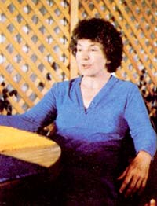
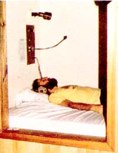
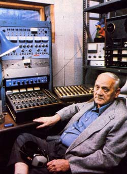

A MOTHER staffer tries to find out for himself whether audio technology can help induce. . .
The following article doesn't necessarily represent the official opinion of the staff or management of THE MOTHER EARTH NEWS (restricted) Instead, it's made up of subjective impressions of what I, associate editor Pat Stone, experienced during the week-long Gate- way Program at the Monroe Institute of Ap plied Sciences. I was sent there, by this mag azine, when we learned that Elisabeth Kubler-Ross (renowned expert on death and dying, and the subject of next issue's Plowboy Inter view) claimed to have made a life-changing exploration of higher states of consciousness while at the institute.
However, although the tale of my own experience at the rural Virginia center pales beside hers (and when compared with many related to me by my coparticipants in the program), it may still strike some readers as pretty far-fetched. If so, that's perfectly understandable. just remember that I'm not trying to convince anyone of anything ... I'm just attempting to honestly relate some (I couldn't tell you all in twice this space!) of what I believe I observed and experienced.
"Have a good trip!" Those were the last words I heard before Melissa Jager, the remarkable woman who's the chief training instructor at the Monroe Institute of Applied Sciences, turned on the first experiential stereo tape that I-and the other participants in the institute's Gateway Program-would hear during our week-long stay. I was lying in my own CHEC unit (it stands for Controlled Holistic Environmental Chamber) ... an isolation cube complete with a comfortable air mattress, a black curtain (to exclude distracting light), speakers, and an excellent set of stereo headphones. I lay still with my eyes closed, eager and anxious to experience ... to experience ... well, I wasn't sure just what might happen!
Of course, while I couldn't guess exactly what was in store for me, I had gathered some background knowledge about the institute before signing up. It was started by Robert Monroe, a former radio show production executive who claims to have begun, in 1958, to spontaneously undergo bizarre personal events that he didn't understand. In essence, Monroe's adventure-snow commonly called out-of-body experiences, or OBE's-were typified by a sensation that his conscious mental self had lifted from his resting physical form and (with an ethereal "body" of its own) traveled by the power of thought to places near, far, and otherworldly.
Bob's full story is detailed in his wellknown book, Journeys Out of the Body. I'd read the volume a decade earlier and hadover the years-talked with several people who claimed to have had out-of-body experiences themselves. (For instance, a close college friend had told me that he once watched his own body from the ceiling of his apartment, while his roommate frantically worked to rescue the sleeping form from a fire!) In fact, as soon as it became known around the office that I was supposed to go to "Out of Body U.", an occasional cohort would pull me aside and-often in a secretive voice-admit his or her own experience with "astral travel".
At any rate, I believed-particularly after hearing such accounts-that OBE's, as well as many other experiences related to altered states of consciousness, were possible ... but about the only encounter Id had with any so-called higher energies consisted merely of feeling an electricity-like energy (called prana by yogis) moving up my spine and into my skull during a year of hatha yoga classes. So while my attitude toward the adventure I was about to undergo was open and receptive, I was-in effect-a "New Age novice".
Bob Monroe now employs modern sound technology to help other people reach various higher states of awareness. (The OBE was supposed to be only one possible outcome among many.) His method is based on two premises: [1] If your brain "hears" a sound frequency it can create electrically itself, it will tend to imitate that same wave signal (Monroe secured a patent on this "frequency-following response" in 1975). [2] You can't directly hear such sound waves (they're mostly pitched too low for the ears to pick up), but they can be communicated to the mind by playing slightly different wavelengths to opposite ears through stereo headphones. Your brain will then assimilate the two pulses and-in effect-"hear" the difference between them! Thus, if you wanted to send a 10-cycle-per-second (CPS) signal-a low alpha signal-to the mind, you could play a 100-CPS sound wave in one ear and a I 10-CPS signal to the other. Your brain would, it's claimed, be aware of the information received by the separate ears, hearing both signals and their difference ... a 10 -cycle-per-second wave.
Having worked at home with some of the institute's Discovery tapes (a set of six cassettes that can be used either independently of the center's program or as a preparation for the Gateway course), I believed that Monroe's brain-hemisphere-uniting process-called " HemiSync"- could work. In fact, my biggest fear was that I'd simply show so little aptitude for alternative consciousness that I'd have a drab, disappointing experience and end up with no personal growth (and nothing to report). Conversely, my goals were to have an actual out-of-body experience ... to gain more spiritual insight ... to grow as a loving person ... and, of course, to get material for an interesting article.
In short, that's where I stood-or rather lay-one Sunday morning last May when our trainer started playing the first tape.
The first tape. Immediately after Melissa's friendly send-off, the sound of ocean surf (which underlay every tape as an "audio bed") rose up and filled my headphones. Next, Bob Monroe's deep, soothing-recorded-voice told us to adjust our headsets so that the volume was balanced between our ears and we heard his voice in the right channel. Then humming, almost hissing, tones-which were the Hemi-Sync signals-blended in with the sea wave sounds.
At this point Bob's voice began describing the four steps of the "pre-preparation process" . . . a procedure that would serve as the opening ritual of every tape. The first step was to construct an "energy conversion box", a mental vision of a chest in which we were to "lock away" all of our everyday concerns (such as my worry about having to write an article) and thereby leave our minds free and unburdened.
Second, chanting voices on the tape pro vided the cue for us to begin "resonant tun ing": a series of deep, open-throated breaths during which we inhaled while visualizing sparkling energy entering our bodies and rising up into our heads and exhaled while chanting "aaah", "oooh", or "ummm" and mentally releasing the energy.
Third, we were to construct a "rebal", or "resonant energy balloon": a sphere of energy outside our bodies. We would do this by "shooting" the energy gathered during resonant tuning out the tops of our heads, down around our bodies, and back in at our feet.
Last, we were to repeat the Gateway Affirmation, the institute's credo, which begins, "I am more than my physical body. Because I am more than physical matter, I can perceive that which is greater than the physical world." (It goes on to proclaim the individual's deep desire to learn to use beneficial higher energy systems, and to be guided and protected.)
Well, even though I'd practiced all of these techniques on the Discovery home tapes, I still had some difficulty acting them out. My imaginary worry box didn't stop me from getting distracted with outside thoughts. And although I made an earnest mental attempt to rebal, I didn't feel as if I were pushing any energy at all around my body. On the other hand, the Hemi-Sync signals and chanting did invoke the type of spinal energy flow I'd felt in my old yoga classes. In fact, my whole body felt stimulated as if by a pleasing charge of energy.
After about 45 minutes, the tape wound down and brought us back to normal consciousness (often called "C-1" or "Focus 1 " at the institute). We all left our individual booths and gathered in a meeting room to discuss the experience.
Thus began the ongoing "take a tape and then relate" routine of the week. Except for the excellent vegetarian meals, a two-hour break each afternoon, and some movie viewing, that's what we did ... at least six times a day!
Focus 10 . The next tapes we worked on took us from Focus 1 to Focus 10 ... a consciousness level where "your mind is awake and your body is asleep". Induced by combining low theta (sleep) brain-wave signals with higher beta (wakeful) ones, Focus 10 was to become a launching pad for all the other experiences to come.
It took me a tape or two to get going, but eventually I was having great fun! My internal energy flow seemed stronger and stronger. I was even beginning to feel the sensation of some energy shooting out of my head during the rebal phase (although no matter how hard I tried , I couldn't make this looping flow extend below my knees). And Focus 10-whatever it was-did give my whole body a tingly, alert feeling.
Intro Focus 12. The last tape of the day was also the first one to go beyond the six Discovery cassettes and into new (to me) territory ... to Focus 12, "the state of expanded awareness". After the initial prepreparation process (during which I finally began-with difficulty-to be able to feel that I was projecting some rebal energy down to my feet!), Bob's recorded voice led us up to Focus 10 ... counted to 12 ... back to 10 ... up to 12 again ... back to 10 ... and then down to C- 1.
The moment before Bob's voice first called out "10", I felt my body zapped all over with remarkably intense electricity. When he led the count up to 12, I tried to imagine an expanded self (even though I had no idea what that really meant!) ... and suddenly my chest got tight. I felt as if I had to fight to breathe. I was also hit with rushes of harsh light, and my body was racked with vibrating energy.
In fact, I became so frightened by these sensations that I instinctively chanted the Gateway Affirmation ("I am more than my physical body. . . .") out loud to get a hold on myself. Finally, when the tape was over, I did some stretching exercises to calm down the residual physical tinglings ... and prayed.
From a follow-up interview with Bob Monroe: "The signals we send in the sequence of a tape follow a lot of the gradients of sleep ... up to a certain point. Then, at Focus 10, we insert some high beta signals on top of the already established theta tones, in order to trigger a waking consciousness while leaving the body asleep. And when we go to 12, we drop the body down even deeper, into delta sleep, while-using a specialized mixture of at least four different sets of beta signals-we increase the level of mental wakefulness.
"Now you should understand that according to most researchers, the high beta signals we use here are not analogous to any known brain-wave patterns and have no particular value. Such scientists typically think of beta signals as going up to 30 or 40 CPS. We use much higher wave pulses here, however. In fact, when we try to help trigger out-of-body states, we employ beta signals of around 2877.3 CPS."
Self responsibility. When we rejoined our group, I told the others how very trying my tape experience had been. And-I'll admit-I kind of expected our instructor to offer comfort. Instead, she challenged me: "What are you afraid of? Don't resist pain ... that just increases it. Move into the experience, so you can move through it."
I was a little startled by her blunt reaction, too. But then I realized that her advice was likely sound, and-after all-I hadn't asked for emotional support. Besides, as I came to observe them throughout the week, I noted that Melissa and her cotrainer (a visiting psychiatrist) expected the program participants to take responsibility for themselves. True, they would always keep an eye on people who seemed troubled or didn't leave their CHEC units after a tape, but they never encouraged any of us to act dependent or even to share our experiences. Instead, they gave us respect and a right to privacy.
Monday ... clicking out. According to Monroe, tape listeners will automatically "click out" into a deep sleep if they're not ready to deal with what they're hearing. And, indeed, more than one member of our group had trouble staying awake during the initial tapes. Some past Gateway participants had reputedly slept through every tape for three days ... only to wake up during a Hemi-Sync experience on the fourth afternoon and find themselves hovering above their bodies!
Of course, I had to wonder whether "clicking out" was a real phenomenon or just a euphemism for catnapping. And I couldn't answer that question ... until one day, later in the week (during a Focus 15 tape), when we were supposed to travel back mentally on a wheel of time and explore our past. As soon as I decided to attempt to "visit" a traumatic and still disturbing incident in my childhood, I started feeling weary. The next thing I knew, the entire 45-minute tape was over!
Once we regrouped, many other members confessed that they, too, had passed out. Melissa then told us that, in her experience, well over half of program participants "click out" on that particular tape. "A lot of people don't like to face parts of their past," she said.
Out-of-body practice. On Monday we also tried a Focus 12 tape which helped us play with five different ways of leaving our bodies ... such as rising up on end like a telephone pole, rolling out like a log, or simply floating up. By this time, I was no longer hit with the formerly experienced overpowering energy during the Focus 12 state-in fact, my first exposure to every new level was the most physically intense-so I was able to try all five techniques calmly.
I didn't "go" anywhere, though. Maybe I was tensing my body too much. Or perhaps I was trying too hard, because after I attempted to levitate my left "astral" hand, I opened my eyes ... and discovered I was moving my real hand!
Bob Monroe : "If any people come here expecting that we can guarantee them an out-of-body experience, we give them their hats and say goodbye. Of course, most individuals who hope for an OBE learn other, perhaps more important, lessons here. You see, there are a lot more useful ways to handle the same energy that creates the out-of-body state."
Melissa: "Only a small percentage of the people who come here have an OBE during their stay. A good number achieve one a few days after they return home-once they've given up hope of it-because their eagerness for the experience actually kept them from having it! After all, an expectation is a way of saying you can't do something now."
My thoughts: "But how can I stop wishing for an out-of-body experience if I really think I want one?" I felt trapped by that paradox much of the week. After all, I reasoned, what better proof could I receive that I am more than a physical body ... and what more exciting event could I have to write an article about?
The group: I soon learned that most of the folks attending our session had more extensive backgrounds in alternative consciousness research than I did. And as the week went on, I couldn't fail to be impressed by their experience, their commitment, and-especially-their eagerness to exchange information with like-minded people. (Many of them have to keep their expanded-consciousness experiences secret most of the time ... since their friends-and, often, employers-could be shocked to hear about such things.)
Of course, the fact that the Monroe program (which isn't advertised anywhere) is both difficult to find out about and expensive (the week cost $850) helps limit participants to very committed people rather than attracting mildly curious "New Age dilettantes". Our group, for instance, included a parapsychological healer from Europe who claimed to have cured his own debilitating childhood case of multiple sclerosis by going out of his body and performing an "astral operation"!
On the other hand, some members of the grouplike me-tended to have less dramatic personal events ... and to spend almost as much time wondering if our experiences were real as we did learning how to deal with them. Yet we also tackled our extraordinary lessons with focused sincerity.
Patterning. One of the "second state" skills we worked on during the week was patterning ... which involves going into a Focus 12 state, "balling up" a question you want answered-or a request-inside your head, and then "shooting" that query out to the universe at large. And although the process might at first seem to be merely a new-fangled version of traditional prayer, we were told that patterning demanded some specific and specialized techniques.
For one thing, we were supposed to re lease completely-even forget-a patterned request rather than attempt to hold an expectation concerning it in our minds. Furthermore, it was equally important, Melissa told us, to add the "disclaimer" that we wanted our wishes fulfilled only if they would be in the interests of our higher selves ... to keep them from possibly backfiring. Our instructor also advised us to phrase our requests in the present tense ("If you ask for something to happen in the future, the result may always stay in the future") and to think positively, as if our patterned questions had already been answered ("You're creating an effect ... the cause will catch up to it").
Tuesday. States like Focus 10 and Focus 12 were starting to take shape for me (instead of simply giving me intense physical rushes). Focus 10 definitely did involve a "body asleep, mind awake" feeling. And in the less-relaxed Focus 12, I consistently felt a vibrant energy extending to the borders of my rebal cocoon.
While working with new tapes, we did a variety of exercises today, such as attempting to send visual color energies (red for vitality, purple for healing, green to wash out negative emotion) throughout our bodies ... and experimenting with a "bubbling away" technique to help deal with personal fears. (After this last tape, one group member related how she first visualized a snake, then "bubbled away" her phobic fear of the reptile ... and saw-in its place-a brown belt, which reminded her of long-forgotten beatings she'd received from her father!)
Some of the day's tapes gave me strong physical sensations ... others had little obvious meaning or effect ... and a few did indeed seem to portend insight or power. Yet perhaps equally significant for me was a "physical level" event that took place when I asked the parapsychological healer in our group to cure my new-and irritating-case of poison ivy. In response, he told me to take a bath in a half-and-half mixture of human urine and the milk from dandelion stems. When I protested that I could never gather enough of those two required liquids, he stated simply, "Well, visualize it! I hat's the same thing!"
So, alone in my room, I sat down and imagined an elaborate treatment scenario ... complete with specialized machinery for harvesting millions of dandelion milk droplets, and lots of beer drinking to help me produce the other ingredient. Finally, I pictured dunking myself three times in the noxious mixture.
When it was over, my skin really did feel covered with a caky crust. And soon after that 3 1 was-cross my heart!-taken aback by the unmistakable stench of stale urine! In fact, the odor was so strong that I was hesitant to rejoin the group ... until I decided that they couldn't possibly smell the product of my fantasy!
The result? My poison ivy did not go away, but ran its usual several-day course. The itching, however, stopped ... and to an inveterate rashscratcher like me, that relief was as good as a cure. True, the familiar irritating sensations returned about once a day thereafter, but if I spent a few moments revisualizing my treatment scenario, the maddening urge to scratch went away ... every time.
Was I just fooling myself? Well, as far as I was concerned, that didn't matter ... because the technique worked!
Bob Monroe: "The Gateway process provides a dramatic means of discovering oneself, and then making full use of one's potential. We provide the tools ... which are mental, riot physical, ones, They can then be used in a variety of ways for such purposes as practical problem solving, gaining self-knowledge, or maintaining mental health-but what each person does with the tools is an individual matter.
"We don't try to indoctrinate people. Instead, we say, 'Don't take our word about anything ... but find out for yourself what's true. The tools we are providing should help you do this.'
"We have only one piece of dogma that we want to knock into people's heads: 'You are more than your physical body. If you will seriously consider-and try working with-that assumption, you'll find here the opportunity to know that it's so.'
Wednesday. This was one of my best days. Almost all of the tapes felt really accessible and enjoyable. And such basic maneuvers as popping a rebal or going into Focus 10 or 12 were now ridiculously easy. In addition, I was gaining a greater sense of control over these processes. One example of that occurred during a tape on Focus 15, "the state of no time". (According to Bob, time is merely an assumption made by one's consciousness. People can therefore learn to acknowledge, experience, and utilize-by doing such things as peering into the past or future-the fact that time does not exist.) Now I can't guarantee that I experienced timelessness while I was in Focus 15, but I did feel that my mind was in a beautifully clear, still, and relaxed place. In fact, I felt so good "up there" that when Monroe's taped voice started to bring us back down to C-1, I just took off the headphones, moved myself back up to 15, and enjoyed it for a while. (Melissa applauds such actions: "It's important to ultimately shake your dependence on tapes ... to learn to reach these states without using 'training wheels'
Going Out? After one of the day's tapes, a group member told us that she saw the words "I am more than my physical body" spin in a vortex overhead. Then her arms began to ache and to rise straight up in the air. "I would have bet a paycheck," she said, "that my real arms were sticking up ... but when I looked, they were still on my chest!"
Melissa then gave us a lot of advice on how to get all the way out if we feel ourselves starting to separate from our physical bodies: "Think of something you really want, and mentally try to reach for it. Or speed up the process by imagining yourself hopping onto a Ferris wheel. But don't tense up and hold your breath, or deliberate about what's happening to you, or you may squelch it."
And me? I'm trying to stop hoping for an OBE. Instead, I'm attempting to pattern that I already am out of body ... and back in, of course!
The problem of trust. Several members of the group have expressed the thought that although sensations, insights, and messages received during a tape session may feel completely real at the time, they can't help q uestioning the validity of the experience once they regain normal consciousness. When they asked our trainer if their tape experiences were authentic, she responded, "You're the only one who can judge. Whenever you reach to us for validation, all we can do is show you consensus ... in the form of statements made by many other people that these types of things have happened to. Yet ultimately, the extent to which you can validate yourself will determine the extent to which your reality will be able to expand further."
One group member (a Gateway veteran) added, "I didn't really believe the answers I was receiving through these processes until they disagreed with the course of action I would normally have chosen ... yet they worked!"
Thursday ... the elation series. Today we went through four tapes in which we were supposed to gradually "elate our consciousness" to encompass the entire earth ... the solar system ... the galaxy ... and wherever we wanted to explore. The aim of the series seemed to be that all-awareness experience, typical of many Eastern religions, known as cosmic consciousness.
I went both "up" and "down" on these tapes. I did experience many strange sensations. It seemed-once again-that my consciousness was being stretched an I was beginning to encounter new levels of awareness. At the same time, though, a ring of sharp physical pain began to develop at my elbows. The ache became so intense during the third Elation tape that I quickly counted myself back down to Focus 1, took the headphones off for a while, and rubbed my arms.
Friday ... Focus 21. According to an entire cosmology that Bob and his researchers were apparently given from "beyond" (the institute offers cassette recordings of these "explorer series" transmissions), there are 21 levels of physical life. Seven of these encompass the range of human existence, while the highest-Level 21-provides the beginning of a bridge to nonphysical spirit forms.
As always, we weren't asked simply to accept these ideas, but to try working with them and see what happened. So we moved up to a new state, Focus 21 (which was, in theory, parallel to Level 21) and tried to reach out for communication with the beyond. I didn't meet any identifiable spirits during this tape (as did the member of our group who related afterward that she'd had a deeply profound contact with her deceased and formerly estranged mother), yet I did have a personally powerful and meaningful experience. I was flushed several times with feelings of love and-through a vision of people undertaking symbolic activities in a variety of different rooms-gained some moving (and, I think, truthful) insights into the emotional difficulties of several individuals I know.
In addition, my lower arms started aching again ... and this time, my forearms felt as if they were beginning to rise. I tried using mental Ferris wheels to encourage the process, but I think that my self-consciousness stopped it instead. Figuring my hands were only about six inches off the bed, but that I'd better check quick or they'd lose even that slight elevation, I opened my eyes ... and saw that my forearms-while they may have been pressing up a little on my covering sheet-were still on the bed!
Oh, how I wished my hands had felt way high up-instead of a measly few inches-so I could have been positive I wasn't kidding myself. But then I realized that the reality or nonreality of one "out of hands" experience wasn't all that important. The real lesson, I became certain, was that the processes I'd been going through during the week were definitely beginning to lead me to higher states of consciousness. I now knew without doubt that these altered states existed and that I had some tools for working with them (and was even convinced that sometime-in my lifetime-I would reach an out-of-body state).
In a way, though, I felt like a child who, having just learned to climb the steps to the high diving board at a swimming pool, jiggles up and down on the edge of the board ... tightening up with nervous tension, yet not ready to jump.
My real body was the diving board I wasn't ready to leave. And something our instructor told me privately just before we took the last tape of the day-and of the week-made me realize that as long as I had to fulfill the role of a journalist, it may have been both impossible for me to jump off the board and best that I couldn't. Melissa admitted that she was both "awed and appalled" that I had managed to fully participate in the course while working toward preparing a report on it. Other writers who'd come to Gateway on assignment had all quit part way through ... either from disbelief or because they finally couldn't handle it.
So the fact that the personal insights into higher reality that I gained during this week were completely convincing-though not as dramatically earthshaking as I'd hoped-may well have been "in the interests of my higher self"'. Someday, though, I'd like to go back to the Monroe Institute on my own ... and see what happens then.
The last tape. I can't tell you all of the moving experiences I had during-or connected with-our final tape, but I will share one ... an event that's had great importance for me. It concerns my then fourmonth-old daughter, Jessica.
When Jesse was born in February 1982, my 2-1/2-year-old boy Nathan had been seriously ill for two weeks. Indeed, a few short hours before my daughter's birth, my wife and I finally admitted our mutual fear that our son might die ... and just three hours after the delivery, I was taking the pain-racked boy to an appointment with medical specialists.
Nathan eventually recovered. However, my emotional preoccupation with my son throughout Jesse's arrival, and during the first days of her life, apparently hampered my ability to establish a good relationship with my daughter. She couldn't relax in my arms, or even look at me for long without crying. We both felt uncomfortable with each other.
This problem troubled me deeply, so during our last Gateway experience-a patterning tape-I asked to have a close, loving relationship with my daughter. As previously instructed, I didn't put a time frame on my wish ... yet in the back of mind, I couldn't help thinking I'd be grateful if our relationship turned around in a few years.
When I got off the plane the next day after my return trip, then, I was eager to greet my wife and son, but nervous about seeing Jessica. Remembering that the one time I left Nathan for a few days during his infancy, he'd almost seemed to forget who I was, I couldn't help fearing that what little bond I had established with my daughter would have dissolved and that she'd be even less comfortable with me now than before.
Yet when I walked up to greet my family, Jessica saw me ... and just beamed. Her face glowed with a delight I'd never seen her show for anyone except her mother.
And she's been happy and loving with me ever since.
Postscript. What about afterward? Does the Monroe program have any lasting effects? was able to contact five of the members of my Gateway group seven months after our one-week session. All felt they had gained a deeper knowledge of themselves through the program, and that their experiences there had been personally authentic and meaningful. They varied greatly in the degree to which they were incorporating what they'd learned into their daily lives, though. One, for instance, only uses the Focus 10 method for keeping his mind aware-while resting-to help him investigate his dreams ... and another, caught up with simply surviving in the struggle of day-today life, just uses Monroe relaxing techniques to relieve particularly hectic moments. At the other end of the spectrum, two members put the tools to work quite frequently ... going into a Focus 10 or 12 state to receive prompt answers to difficult decisions, for example, or even popping rebals to help repel antagonistic dogs!
I, too, feel that the personal and spiritual lessons I learned from the program are valid ... but I've definitely been remiss about applying Monroe's technology in my day-to-day life. I rarely listen to any Hemi-Sync tapes, and I have difficulty mustering up strong energy flows. Yet-call it coincidence or cause and effect-when I apply the methods, they almost always seem to work. The poison ivy itch remedy has never failed me (or my wife). The institute's Catnapper tape (which condenses the brain-wave patterns of a normal 90-minute sleep cycle into 30 minutes) has given me, and two friends, refreshing half-hour rests. Once, after a hard day of rototilling, I used purple energy to prevent subsequent-and normally almost inevitable-back pain ... and had no "after aches". And the results I've patterned for-whether they were as trivial as avoiding a driver's license hassle or as significant as improving a serious family problem-have always been favorable.
If you'd like to learn more about the center, you can write the Monroe Institute, Dept. TMEN, Box 175, Faber, Virginia 22938 (or call 800/446-5006) for a packet of free information. The institute can also supply the book Journeys Out of the Body for $6.50 ... a number of practicalpurpose Hemi-Sync tapes (such as Under Par Golf, Love Tennis, Sound Sleeper, Concentration, and the Catnapper) for $11.95 each ... the full set of six Discovery cassettes for $95 (all these prices include postage) ... and the week-long Gateway Program for $850.
And finally, as a special offer to interested MOTHER-readers, Bob Monroe has agreed to send "The Way of Hemi-Sync" (a 30-minute introductory experience tape), plus the institute's basic information packet and a $5.00 discount coupon for further tape purchases ... all for $5.00 postpaid (in the United States).
|
Monroe Institute.... |
 Chif instructor Melisa Jager |
 MOM's staffer in a CHEC UNIT |
|
 Bob Monroe at his composing switch board |
|
|